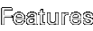
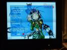
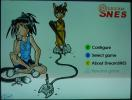
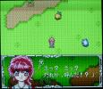

DreamSNES is a Super Nintendo emulator based on Gary Henderson's
Snes9X. It runs directly on the Dreamcast hardware without using
any SEGA or Microsoft libraries. It has been completely developed
using free tools. DreamSNES was created by
Marcus Comstedt,
Peter Bortas, and
Per Hedbor.
DreamSNES is a Super Nintendo emulator based on Gary Henderson's
Snes9X. It runs directly on the Dreamcast hardware without using
any SEGA or Microsoft libraries. It has been completely developed
using free tools. DreamSNES was created by
Marcus Comstedt,
Peter Bortas, and
Per Hedbor.
DreamSNES 0.9.8 released
The pumpkin season is upon us, so here is a Halloween release of DreamSNES. The SA-1 emulation should now work with the assembler CPU core, and for you MegaMan fans, there is now C4 emulation!
DreamSNES 0.9.7 released
Mostly bugfixes this time too (the assembler CPU core should now work just as well as the old core). New features include saved settings, and a few new keyboard functions.
Please note that a graphical installer is now available for DreamSNES. Not only does it relieve you from messing around with the commandline (which I hear some people find troublesome :), it will also index your ROM collection and create a database on the CD for fast menu operation. Read more about it in the Installation section below.

- SRAM saves to VMS (when the VM starts beeping, there is a save in progress)
- Interactive game selection menu
- Optional TV-mode for giving the right feel when playing on a VGA monitor
- Up to four controllers supported, and also mice and lightguns (support for rumble pack planned)
- Really nice graphics by Kathy Choi (thanks!) (More excellent images by Kathy can be found on her Elfwood page.)
- Groovy music by Jan Warnstam (the X-mas edition instead has a Yuletide hit song by Daniel Wressle)
Here are some screenshots taken by Peter with a digital camera. :-)
  
He has more screenshots on this page.
- v0.9.8 - 20021031
- Fixes all known bugs of 0.9.7. Added C4 emulation.
Changes since 0.9.7:- SA-1 emulation fixed (Super Mario RPG now works (again))
- C4 emulation implemented (MegaMan X2/X3 now works)
- Putting a file called "NO_ROMS.HERE" in a directory prevents it from being scanned for roms.
- Added in game menu that lets you choose among other things to reset the game or jump to the next or previous game on the CD.
- Fixed sprites in hires mode with transparencies on. Fixes Tokimeki Memorial.
- Fixed memory map for Super Dante RPG maker.
- Improved buffer handling in mpeg player.
- New locales: Charnego and Romanian.
- v0.9.7 - 20020421
- Fixes all known bugs of 0.9.6. Lists ROMS faster.
Changes since 0.9.6:- Fixed a missed sign extension of an 8-bit value in the assembler core. This should fix problems with counters running wild and other more or less peculiar artifacts people have noticed.
- Speeded up ROMS.LST handling and fixed some bugs in it.
- Lowered the in-game sample rate a bit to increase over all emulation speed.
- Settings are now saved on the VMU.
- Reenabled "Disable transparencies" option on popular demand.
- v0.9.6 - 20020224
- Basically a bugfix only release. Should fix all known bugs of 0.9.5,
we hope.
Changes since 0.9.5:- Fixed bug in saving.
- Fixed bug in multi-tap support. (Multiplayer in Bomberman works again.)
- Fixed interlace problems on PAL.
- Fixed glitches in stereo sound. Both ingame and in the menu.
- Support multiple mpeg layer 2 or 3 sound files in the sound directory. Song names and artists will be read from the id3 tag if it exists.
- Reenabled the "CPU optimizations" mode, which was accidentally disabled in the last release.
- v0.9.5 - 20020214
- This time, we actually do have some speed improvements,
on account of porting the entire CPU emulation core into SH4 assembler.
No mean feat I can tell you... It also happens to be another themed
release, this time inspired by the holiday of love: Valentine.
Changes since 0.9.4:- Rewrote 65c816 CPU core to SH4 assembler
- Added light gun (SuperScope) support
- Fixed a bug that made it impossible to save unless the VMU was in port A, slot 1.
- VMU saving have been improved to work on all VMUs available for testing.
- Whenever a save is in progress a VMU icon will appear in the top left corner. If the save fails for some reason a message will be displayed with the reason for the failure.
- VMU saves are compressed. This reduces practically any save to two blocks.
- Yoshi's Island (and other SuperFX games) no longer crashes DreamSNES
- Controllers are now automatically configured based on what is connected to the Dreamcast. Check the heads up display in the top right corner when starting a game for the current configuration. The configuration can be dynamically changed while playing by removing or adding peripherals to the Dreamcast ports.
- A file (ROMS.LST) can optionally be added to the cd to speed up the rom scan. The game names will then be takes from the file instead of scanning the rom header.
- Added Finnish, French, German, Italian, Japanese, Polish and Spanish translations. Thanks to all locale contributors!
- v0.9.4 - 20010312
- Again, not much improvement speedwise. We just though people
would start to get really tired of the Christmas song by now. :-)
Changes since 0.9.3:- Support for C and Z button (as select and exit to menu)
- Better keyrepeat handling in the menus
- Fullscreen mode added (default, but configurable)
- Translation to Swedish. And French (sort of).
- Screen "blanker" in menu
- New music by Jan Warnstam
- Keyboard support: Press ESC for menu, Pause for "blanker"
- Better support for third party memory cards
- ROMs can now be placed in a directory "ROMS/" instead of in the root
- v0.9.3 (X-mas edition) - 20001222
- This is a special Christmas release to keep you occupied over the
holidays. Merry X-mas and a Happy New Year!
Improvements over 0.9.2:- Converted the menus to a cosy Christmas theme.
- Added mouse support
- Added possibility to to interpolate mode7.
- Speeded things up a bit. Note that it is still slow.
- Fixed menu interlace problem.
- Removed one of the soundtracks to reduce download size.
Known bugs: Does not save to Joytech or Nexus 4M bankswitched VMUs.
- v0.9.2 - 20001104
- This is the second public beta. It is
not significantly faster than 0.9, but have been tweaked to be more
playable, and has some awesome music included. The specific improvements
are (details in the CHANGES file):
- PAL support
- Verical offset of non-VGA screens fixed. (i e bottom of screen should now be visible.)
- 50/60Hz video option
- Double buffering
- Less frame skipping
- Stereo sound support
- Up to 1024 ROMs per CD supported.
- Game can be selected before the ROM list is completely loaded
- Music added on the menu screens
Known bugs: Sometimes the interlace gets screwed up. If this happens, switch between the game and the menu until it goes away (usually at the first try).
- v0.9 - 20001007
- This is the first public release. Most stuff works, but it's still pretty slow. Expect around 50% speed in most cases. The background music for the menu has been disabled as it didn't work properly, sorry. Don't download this version if you want a really playable system, it's more for the curious who don't mind wasting a CD-R on playing around with a beta.
To get DreamSNES running on your Dreamcast, you need to burn it on a CD-R together with any SNES roms you want to run. There are no game roms in the DreamSNES distribution, you have to get them elsewhere. Remember that you may only use dumps of SNES roms that you actually own in order to be 100% legal.
There is a graphical tool to create the DreamSNES CD-R for you. It allows you to select a DreamSNES version, and any number of ROMS, and it will download DreamSNES and create the CD automatically. Please note that you do not even have to download the DreamSNES distribution, just download and install the installer program (and the components it depends on), and you'll be able to burn the latest DreamSNES at any time.
It is still possible to use the old manual method for creating the DreamSNES disc, the description of that procedure remains further down, under the heading "Classical method".
New: Peter Bortas has kindly compiled an easy installation kit for W*ndows users, containing all the necessary components. If you're running W*nodws, you are strongly urged to just download this package, and follow the instructions inside. Once you get the dreamsnesinstall script running, skip to the paragraph starting with "If the startup goes well" below.
To use the graphical installer, you need:
- GTK+
- This is the GUI library used to create the graphical interface. If you don't already have it, you can get it from the GTK+ homepage.
- Pike
- This is the script language in which the installer script is written. If you don't have it, you can get it from the Pike homepage.
- cdrtools
- To actually write the CD, the script calls the tools cdrecord and mkisofs from the cdrtools package. Place them in your path, or in the same directory as the installer script.
- dreamsnesinstall.pike
- Well, the script itself. :-) (If your browser is stupid, shift-click.)
To start the installer, just launch the script using the Pike interpreter (on UNIX, it should just be a matter of setting the executable-bit on the script; on W*ndows you probably have to associate the extension ".pike" with the pike interpreter or something). If the startup goes well, you should be presented with a window containing a selector for the device ID of your burner. You may also select to create an "image file" for Nero Burning ROM. Only use that as a last resort though, it's slow. The selection "direct burn" means to write the data to the disc on the fly as it is constructed, rather than to write it to hard disc first and then burn it. Normally it should be safe to do this, but if you are worried just leave it unchecked and make sure you have enough space on your hard drive instead.
After you have selected your burner, pick the DreamSNES version you want to burn from the box below, and proceed to the ROM selection page. Here you can pick the ROM files you want to include on the cd. No ROM files are distributed with DreamSNES, you have to provide them yourself. Note that you do not have to add ROM files one at a time. Just add a directory with ROM files, and all its contents will be added.
When you have enough ROMs (don't add more than will fit on a CD, unfortunately there is currently no check to automatically prevent you from doing that), go to the Action page and hit the Start button, and the disc creation will start. (First, it will download the DreamSNES distribution for you.) If anything goes wrong, please consult the messages in the popups and in the "Messages" box on the Action page.
This is the old recipe for creating a DreamSNES disc. If you haven't already done so, you should definitely try out the graphical installer before resorting to the method outlined here. If you don't like the installer, you can still use this method, but it is your own responsibility to know what you are doing. :-)
Extract the contents of the DreamSNES distribution (dreamsnes-0.9.8/cd/) into an empty directory, and place any roms in the same directory (up to 1024 ROM files). Optionally, you can create a directory "roms" and place the ROM files in that. You must not use zipped roms, you have to unzip them before burning. You can also burn the roms on a separate CD and swap CDs when the emulator has booted. Such a separate rom CD can be a normal mode 1 data CD, it does not have to be CD/XA. If you make a separate rom CD, you may want to put the "sound" directory from the DreamSNES distribution on the CD as well, so that you still get music in the menu.
When you have the necessary files in a directory, just make that into a self booting disc as described on the CD-R page. Just give mkisofs the name of the directory and it will add everything in the directory to the iso. Then insert the supplied IP.BIN into the resulting ISO.
Before you download, please make sure that you have read and understood the Installation chapter above. You should also be aware that the current release is a beta version which may not perform optimally speedwise with all games. If this is not a problem, you may go ahead and download one of the archives below.
Please note that you do not have to download this distribution if you are going to use the installation script, it will handle the download for you.
Please note that you do not have to download this distribution if you are going to use the installation script, it will handle the download for you.A forum is here.
Last modified: Sun May 25 00:43:27 CEST 2008